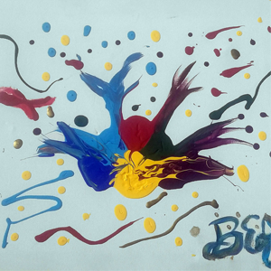

I'm experienced in designing and developing websites for small businesses looking to generate leads and individuals looking to develop an online presence.
Currently I'm looking for opportunities to expand my full-stack knowledge and develop skills in machine learning and artificial intelligence so that I can develop technologies to automate life and free-up time for human creativity.
I firmly believe that the power of the internet and the immense datasets it facilitates is going to lead to an incredible improvement in global quality of life within my lifetime and I want to contribute to that process in any way I can. I hope to help create a more interconnected future, where technology frees up time for human creativity while also helping us to become more collaborative globally to better address the larger issues facing humanity.
Intense desire to succeed in every undertaking from racing snowboards to developing mobile friendly web applications.
Constantly learning and improving due to a passion for self-improvement in all forms.
Excellent time-management and attention prioritization developed from working remotely.
Unconscious attention to detail that extends to my work and my analysis of movies and books.
Strong oral and written communication with the ability to convey concepts to non-technical clients.
Built and maintained countless sites using HTML/CSS/Javascript/PHP and Wordpress to create websites that generated thousands of new unique visitors and thus new business for my clients.
Designed several sites and logos using Adobe Photoshop and Illustrator and translated my designs and others into scalable code that displays well on all different browsers and devices.
Architected and queried relational databases for user profile information, store inventories, and content curation, that are scalable, robust, and service thousands of users efficiently.
Interpreted both explicit and implicit requirements into formal specifications for code with a 90%+ success rate of client acceptance upon initial presentation of the finished website or application.
Collaborated remotely with diverse teams of people in various countries using both GIT and Subversion for version control, primarily working under agile, test-driven development philosophy.
Developed several Android apps, primarily using Java, including: ToDo lists, Server/Client folder sync (ie. Dropbox or Google Drive), a service to connect students with tutors, review/social media app similar to yelp, etc.
Currently working on a mobile game in my spare time to re-familiarize myself with Java and the updated Android API.
My long-term life's goal is to help develop strong A.I. and other A.I. based technology that will help propel humanity forward. Unlike Elon Musk, a personal hero of mine, I'm very optimistic about the future of humanity and the power of A.I. systems to free human labour for more creative and fulfilling pursuits.
I'm a big basketball fan and when I'm not being disappointed in the Toronto Raptors I like to play basketball, dance (sometimes without music), swim, and cruise around on my longboard. During the winter I trade basketball for hockey and the longboard for a snowboard. I enjoy most forms of sport and like to stay active. I'm currently looking to explore climbing, mma and yoga so if you know of any good gyms/classes in the area please let me know.
Outside of sport I like producing stories whether that be in the form of writing short stories, creating paintings or making short-form videos. On the consumption side of things I like reading fiction and non-fiction novels, watching TV, movies, and youtube videos, and wasting my time on the internet reading about whatever random subjects may strike my fancy at the time.
Classes included: Programming on the Web, Database Management, Computer Organization, Software Design, Software Tools & Systems Programming, Economic and Social Networks and more.
GPA: 3.19
Organized and scheduled intramural sports leagues for Woodsworth College's 6000+ students and did marketing via social media and human outreach for the various sports, programs and events Woodsworth offered.
The standard with which the Fraternity started was declared by Isaac M. Jordan to be that of admitting no man to membership in Sigma Chi who is not believed to be:
A man of good character,
a student of fair ability,
With ambitious purposes,
A congenial disposition,
Possessed of good morals,
Having a high sense of honor, and a deep sense of personal responsibility.